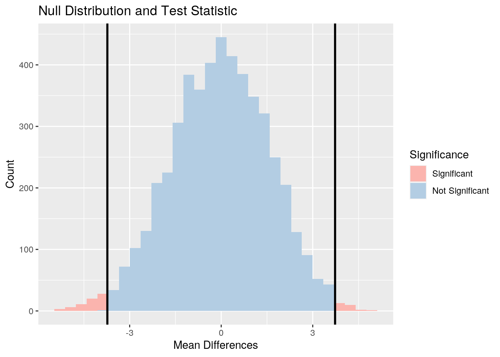
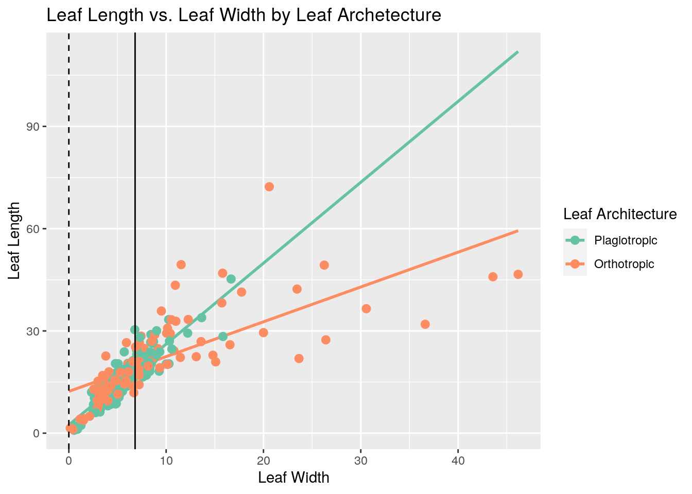
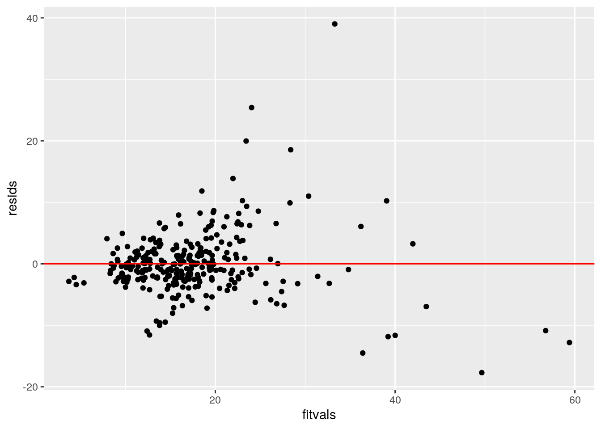
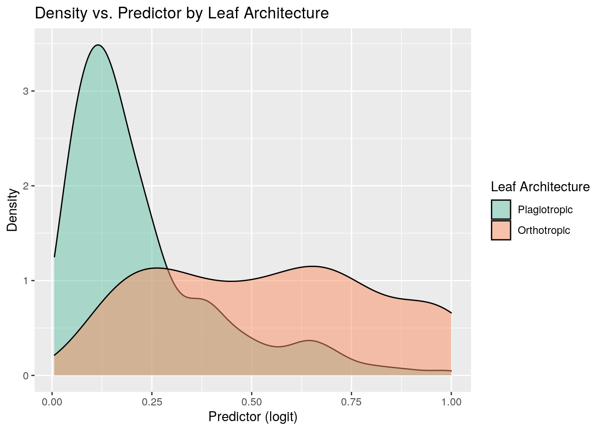
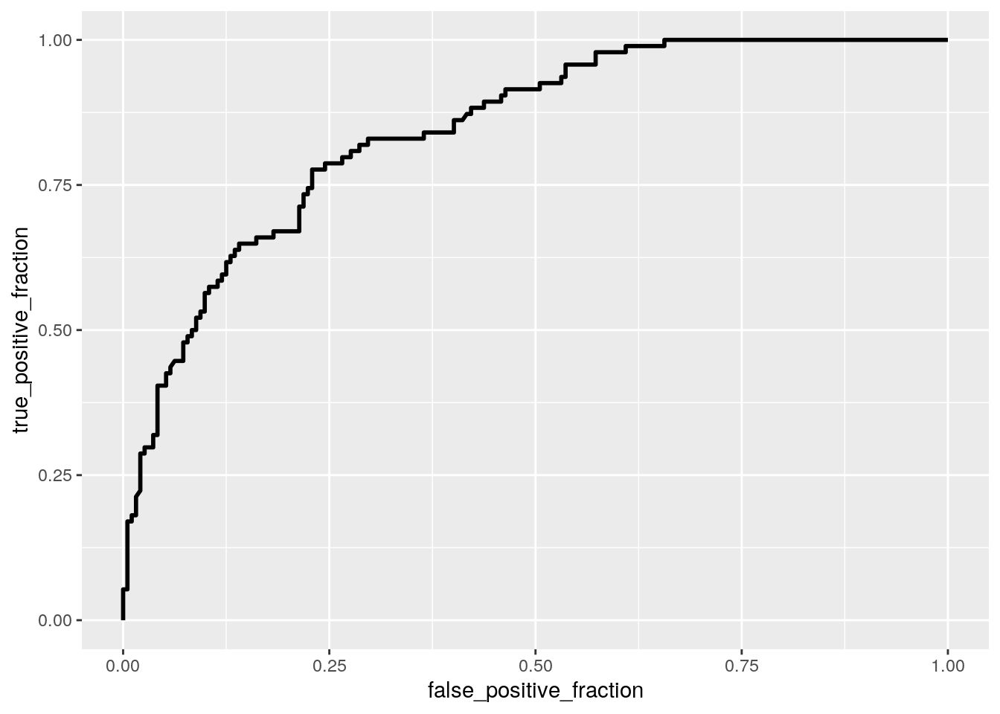

DAGG package.bladelen: leaf length in mmpetiole: length of the petiole (the stalk that attaches the leaf blade to the stem) in mmbladewid: leaf width in mmlatitude: latitude where the sample is taken fromlogwid: natural log of bladewidlogpet: natural log of petioleloglen: natural log of bladelenarch: binary variable of the leaf architecture, where 0 represents plagiotropic (bilateral symmetry) and 1 represents orthotropic (radial symmetry)location: categorical variable of the location where the sample is taken from (Sabah, Panama, Costa Rica, N Queensland, S Queensland, or Tasmania)location can be a value with a space in it, I will first remove all the spaces from this column to prevent problems.library(DAAG)
library(tidyverse)
library(rstatix)
library(RColorBrewer)
library(lmtest)
library(sandwich)
library(plotROC)
library(glmnet)data(leafshape)# Remove spaces from `location`
leafshape$location = gsub("\\s+", "", leafshape$location)
# Convert `arch` to a factor
leafshape$arch = factor(leafshape$arch, labels = c("Plagiotropic",
"Orthotropic"))
# Take a glimpse
glimpse(leafshape)## Rows: 286
## Columns: 9
## $ bladelen <dbl> 33.88, 33.32, 29.35, 26.87, 26.67, 24.23, 23.85, 23.30, 23.1…
## $ petiole <dbl> 1.402632, 1.016260, 2.392025, 0.808787, 0.802767, 1.490145, …
## $ bladewid <dbl> 13.65, 10.26, 12.21, 8.70, 8.41, 7.70, 5.69, 8.41, 7.95, 6.9…
## $ latitude <dbl> 5, 5, 5, 5, 5, 5, 5, 5, 5, 5, 5, 5, 5, 5, 5, 5, 5, 5, 5, 5, …
## $ logwid <dbl> 2.613740, 2.328253, 2.502255, 2.163323, 2.129421, 2.041220, …
## $ logpet <dbl> 0.338350472, 0.016129222, 0.872140288, -0.212219685, -0.2196…
## $ loglen <dbl> 3.522825, 3.506158, 3.379293, 3.291010, 3.283539, 3.187592, …
## $ arch <fct> Plagiotropic, Plagiotropic, Plagiotropic, Plagiotropic, Plag…
## $ location <chr> "Sabah", "Sabah", "Sabah", "Sabah", "Sabah", "Sabah", "Sabah…logwid, logpet, and loglen are calculated from bladewid, petiole, and bladelen, respectively, it does not make sense to include them in the MANOVA analysis. Also drop arch as it is a binary variable. Furthermore, latitude should also be dropped because it violates MANOVA's assumptions by having the same value for all observations in a group# Perform MANOVA without columns `logwid`,
# `logpet`, `loglen`, `arch`, and `latitude`
man = manova(cbind(bladelen, petiole, bladewid) ~ location,
data = leafshape)
summary(man)## Df Pillai approx F num Df den Df Pr(>F)
## location 5 0.238 4.8256 15 840 4.53e-09 ***
## Residuals 280
## ---
## Signif. codes: 0 '***' 0.001 '**' 0.01 '*' 0.05 '.' 0.1 ' ' 1A one-way MANOVA was conducted to determine the effect of the locations (Sabah, Panama, CostaRica, NQueensland, SQueensland, and Tasmania) on three dependent variables (bladelen, petiole, and bladewid).
Significant differences were found among the six locations for at least one of the dependent variables, Pillai trace = 0.238, psudo F (15, 840) = 4.8256, p < 0.0001.
summary.aov(man)## Response bladelen :
## Df Sum Sq Mean Sq F value Pr(>F)
## location 5 4427.8 885.57 12.789 3.302e-11 ***
## Residuals 280 19387.9 69.24
## ---
## Signif. codes: 0 '***' 0.001 '**' 0.01 '*' 0.05 '.' 0.1 ' ' 1
##
## Response petiole :
## Df Sum Sq Mean Sq F value Pr(>F)
## location 5 209.9 41.983 1.5298 0.1805
## Residuals 280 7684.0 27.443
##
## Response bladewid :
## Df Sum Sq Mean Sq F value Pr(>F)
## location 5 795.0 158.992 5.6438 5.632e-05 ***
## Residuals 280 7887.9 28.171
## ---
## Signif. codes: 0 '***' 0.001 '**' 0.01 '*' 0.05 '.' 0.1 ' ' 1Univariate ANOVAs for each dependent variable were conducted as follow-up tests to the MANOVA, using the Bonferroni method for controlling Type I error rates for multiple comparisons. The univariate ANOVAs for bladelen and bladewid were significant, F(5, 280) = 12.789, p < 0.0001, and F(5, 280) = 5.6438, p < 0.0001, respectively. The univariate ANOVA for petiole was not significant, F(5, 280) = 1.5298, p = 0.1805.
bladelenand bladewid are significant, run post-hoc t-tests for themleafshape %>% select(bladelen, bladewid, location) %>%
group_by(location) %>% summarize_all(mean)## # A tibble: 6 x 3
## location bladelen bladewid
## <chr> <dbl> <dbl>
## 1 CostaRica 22.7 9.39
## 2 NQueensland 15.2 5.28
## 3 Panama 18.5 7.55
## 4 Sabah 19.6 6.92
## 5 SQueensland 11.4 5.50
## 6 Tasmania 5.80 1.70# Perform pairwise t-tests for `bladelen`
pairwise.t.test(leafshape$bladelen, leafshape$location,
p.adj = "none")##
## Pairwise comparisons using t tests with pooled SD
##
## data: leafshape$bladelen and leafshape$location
##
## CostaRica NQueensland Panama Sabah SQueensland
## NQueensland 3.6e-06 - - - -
## Panama 0.0105 0.0330 - - -
## Sabah 0.0383 0.0021 0.4642 - -
## SQueensland 1.0e-08 0.0430 0.0002 6.1e-06 -
## Tasmania 5.1e-08 0.0018 3.0e-05 4.0e-06 0.0745
##
## P value adjustment method: none# Perform pairwise t-tests for `bladewid`
pairwise.t.test(leafshape$bladewid, leafshape$location,
p.adj = "none")##
## Pairwise comparisons using t tests with pooled SD
##
## data: leafshape$bladewid and leafshape$location
##
## CostaRica NQueensland Panama Sabah SQueensland
## NQueensland 6.4e-05 - - - -
## Panama 0.0761 0.0226 - - -
## Sabah 0.0103 0.0705 0.5019 - -
## SQueensland 0.0015 0.8534 0.0872 0.2067 -
## Tasmania 8.0e-05 0.0594 0.0024 0.0055 0.0594
##
## P value adjustment method: noneI have done 34 hypothesis tests (1 MANOVA, 3 ANOVAs, and 30 pairwise t-tests). Across this whole set of tests, the probability that I have made at least one type I error is 1 - (1 - 0.05) ^ 34 = 0.8252. I will use α = 0.05 / 34 = 0.001471 to keep the overall type I error rate at 0.05. After the adjustment, the pairwise t-tests between many locations for leaf length and leaf width are no longer significant, including:
For leaf length: Costa Rica and Panama, Costa Rica and Sabah, N Queensland and Panama, N Queensland and Sabah, N Queensland and S Queensland, and N Queensland and Tasmania.
For leaf width: Costa Rica and Sabah, Costa Rica and S Queensland, N Queensland and Panama, Panama and Tasmania, and Sabah and Tasmania.
group = leafshape$location
DVs = leafshape %>% select(bladelen, bladewid)
# Test multivariate normality for each group (null:
# assumption met)
sapply(split(DVs, group), mshapiro_test)## CostaRica NQueensland Panama Sabah SQueensland
## statistic 0.7244706 0.599601 0.5151247 0.5370548 0.5685613
## p.value 2.338322e-08 1.241379e-11 3.2639e-12 1.749155e-14 2.177992e-08
## Tasmania
## statistic 0.8023989
## p.value 0.02174975MANOVA assumptions are: 1. random samples, independent observations; 2. multivariate normality of DVs; 3. homogeneity of within-group covariance matrices; 4. linear relationships among DVs; 5. no extreme univariate or multivariate outliers; and 6. no multicollinearity. The assumptions are not met because multivariate normality is not met, suggested by multiple locations having p < 0.05 for the Shapiro-Wilk test for multivariate normality.
H0: Mean leaf length is the same for N Queensland samples vs. S Queensland samples.
HA: Mean leaf length is different for N Queensland samples vs. S Queensland samples.
set.seed(348)
# Get Sabah samples and Panama samples
leafshape_2 = leafshape %>% filter(location %in% c("NQueensland",
"SQueensland"))
# Store the results of the randomization test
mean_diffs = c()
# Randomization test
for (i in 1:5000) {
temp = leafshape_2 %>% mutate(bladelen = sample(leafshape_2$bladelen))
mean_diffs[i] = mean(temp$bladelen[temp$location ==
"NQueensland"]) - mean(temp$bladelen[temp$location ==
"SQueensland"])
}
# Calculate the differences in mean weights
# (NQueensland - SQueensland)
obs_diff = mean(leafshape_2$bladelen[leafshape_2$location ==
"NQueensland"]) - mean(leafshape_2$bladelen[leafshape_2$location ==
"SQueensland"])
# p-value for leaf length
mean(mean_diffs > obs_diff | mean_diffs < -obs_diff)## [1] 0.0186Since p-value = 0.0186 and is less than 0.05, I reject H0. There is a difference between the mean leaf length for N Queensland samples vs. S Queensland samples.
# Create a data frame
temp = data.frame(mean_diffs)
temp = temp %>%
mutate(significance = # Add a column for coloring
ifelse((mean_diffs < -obs_diff | mean_diffs > obs_diff),
"Sig", "NotSig"))
temp$significance = factor(temp$significance,
levels = c("Sig", "NotSig"),
labels = c("Significant", "Not Significant"))
ggplot(temp, aes(x = mean_diffs, fill = significance)) +
geom_histogram() + # Create a histogram
scale_fill_brewer(palette = "Pastel1") +
geom_vline(xintercept = -obs_diff, size = 1) + # Add a line
geom_vline(xintercept = obs_diff, size = 1) + # Add a line
labs(title = "Null Distribution and Test Statistic",
x = "Mean Differences",
y = "Count",
fill = "Significance")
# Mean center the numeric variable
leafshape_3 = leafshape
leafshape_3$bladewid_c = leafshape_3$bladewid - mean(leafshape_3$bladewid)
# Predict leaf length based on leaf width and
# length of petiole
fit = lm(bladelen ~ arch * bladewid_c, data = leafshape_3)
summary(fit)##
## Call:
## lm(formula = bladelen ~ arch * bladewid_c, data = leafshape_3)
##
## Residuals:
## Min 1Q Median 3Q Max
## -17.696 -2.474 -0.596 1.832 39.010
##
## Coefficients:
## Estimate Std. Error t value Pr(>|t|)
## (Intercept) 18.5713 0.4431 41.916 < 2e-16 ***
## archOrthotropic 0.6365 0.7343 0.867 0.387
## bladewid_c 2.3731 0.1653 14.353 < 2e-16 ***
## archOrthotropic:bladewid_c -1.3522 0.1782 -7.589 4.74e-13 ***
## ---
## Signif. codes: 0 '***' 0.001 '**' 0.01 '*' 0.05 '.' 0.1 ' ' 1
##
## Residual standard error: 5.435 on 282 degrees of freedom
## Multiple R-squared: 0.6502, Adjusted R-squared: 0.6465
## F-statistic: 174.7 on 3 and 282 DF, p-value: < 2.2e-16Mean/predicted leaf length for samples with plagiotropic leaf architecture and average leaf width is 18.571 mm.
Samples with orthotropic leaf architecture and average leaf width have predicted leaf length that is 0.637 mm higher than samples with plagiotropic leaf architecture and average leaf width.
For every 1-unit increase in leaf width, predicted leaf length increases by 2.373 mm.
Slope of leaf width on leaf length for samples with orthotropic leaf architecture is 1.352 mm smaller than for samples with plagiotropic leaf architecture.
ggplot(leafshape_3, aes(x = bladewid, y = bladelen, color = arch)) +
scale_color_brewer(palette = "Set2") +
geom_smooth(method = "lm", se = F, fullrange = T, size = 1) +
geom_point(size = 2.5) +
geom_vline(xintercept = 0, lty = 2) + # Add a line at 0 leaf width
geom_vline(xintercept = mean(leafshape_3$bladewid)) + # Add a line at average leaf width
labs(title = "Leaf Length vs. Leaf Width by Leaf Archetecture",
x = "Leaf Width",
y = "Leaf Length",
color = "Leaf Architecture")
# Check linearity
resids = fit$residuals
fitvals = fit$fitted.values
ggplot() + geom_point(aes(x = fitvals, y = resids)) +
geom_hline(yintercept = 0, col = "red")
# Assumption of linearity met
# Check normality
ks.test(resids, "pnorm", sd = sd(resids))##
## One-sample Kolmogorov-Smirnov test
##
## data: resids
## D = 0.12117, p-value = 0.0004504
## alternative hypothesis: two-sided# Assumption of normality not met
# Check homoscedasticity
bptest(fit)##
## studentized Breusch-Pagan test
##
## data: fit
## BP = 45.587, df = 3, p-value = 6.941e-10# Assumption of homoscedasticity not metThe assumption of linearity is met. However, the assumptions of normality and homoscedasticity are not met because the results from Kolmogorov-Smirnov and Breusch-Pagan tests are significant.
coeftest(fit, vcov = vcovHC(fit))##
## t test of coefficients:
##
## Estimate Std. Error t value Pr(>|t|)
## (Intercept) 18.57129 0.34550 53.7518 < 2.2e-16 ***
## archOrthotropic 0.63652 0.83532 0.7620 0.4467
## bladewid_c 2.37315 0.15473 15.3375 < 2.2e-16 ***
## archOrthotropic:bladewid_c -1.35216 0.23170 -5.8358 1.468e-08 ***
## ---
## Signif. codes: 0 '***' 0.001 '**' 0.01 '*' 0.05 '.' 0.1 ' ' 1# Normal-theory
coeftest(fit)[, 3:4]## t value Pr(>|t|)
## (Intercept) 41.9164521 3.682437e-123
## archOrthotropic 0.8668657 3.867526e-01
## bladewid_c 14.3530831 1.897497e-35
## archOrthotropic:bladewid_c -7.5885413 4.739883e-13For (Intercept), bladewid_c, and archOrthotropic:bladewid_c, the t-statistic and p-value are both increased. For archOrthotropic, the t-statistic is decreased and p-value is increased. Everything significant before is still significant.
summary(fit)$r.squared## [1] 0.650175365.02% of the variation in leaf length is explained by my model.
set.seed(348)
samp_distn = replicate(5000, {
boot_dat = sample_frac(leafshape, replace = T) # Take bootstrap sample of rows
boot_dat$bladewid_c = boot_dat$bladewid - mean(boot_dat$bladewid) # Mean center the variable
boot_dat$arch = factor(boot_dat$arch, labels = c("Plagiotropic",
"Orthotropic"))
fit2 = lm(bladelen ~ arch * bladewid_c, data = boot_dat) # Fit model on bootstrap sample
coef(fit2) # Save coefs
})
# Estimated SEs
samp_distn %>% t %>% as.data.frame %>% summarize_all(sd)## (Intercept) archOrthotropic bladewid_c archOrthotropic:bladewid_c
## 1 0.8347581 0.8016289 0.141845 0.2314173# Normal-theory SEs
coeftest(fit)[, 1:2]## Estimate Std. Error
## (Intercept) 18.5712889 0.4430549
## archOrthotropic 0.6365179 0.7342751
## bladewid_c 2.3731482 0.1653407
## archOrthotropic:bladewid_c -1.3521649 0.1781851# Robust SEs
coeftest(fit, vcov = vcovHC(fit))[, 1:2]## Estimate Std. Error
## (Intercept) 18.5712889 0.3455006
## archOrthotropic 0.6365179 0.8353232
## bladewid_c 2.3731482 0.1547289
## archOrthotropic:bladewid_c -1.3521649 0.2317027The SEs from bootstrapped standard errors are pretty similar to the original SEs and robust SEs. For (Intercept), the bootstrapped SE is greater than the original SE and robust SE. For archOrthotropic and archOrthotropic:bladewid_c, the bootstrapped SE is greater than the original SE but smaller than the robust SE. For bladewid_c, the boostrapped SE is smaller than the original SE and robust SE.
# Predict leaf architecture from location and leaf
# length
fit2 = glm(arch ~ location + bladelen, family = "binomial",
data = leafshape)
coeftest(fit2)##
## z test of coefficients:
##
## Estimate Std. Error z value Pr(>|z|)
## (Intercept) -5.101163 0.755947 -6.7480 1.498e-11 ***
## locationNQueensland 1.432732 0.531353 2.6964 0.00701 **
## locationPanama 0.879285 0.528238 1.6646 0.09600 .
## locationSabah -0.465753 0.499379 -0.9327 0.35099
## locationSQueensland 3.455116 0.659589 5.2383 1.621e-07 ***
## locationTasmania 5.490632 1.068347 5.1394 2.757e-07 ***
## bladelen 0.189644 0.028943 6.5524 5.662e-11 ***
## ---
## Signif. codes: 0 '***' 0.001 '**' 0.01 '*' 0.05 '.' 0.1 ' ' 1Controlling for leaf length, N Queensland samples and Costa Rica samples are significantly different. Odds of being orthotropic for N Queensland samples is e ^ (1.433) = 4.190 times odds for Costa Rica samples.
Controlling for leaf length, Panama samples and Costa Rica samples are not significantly different.
Controlling for leaf length, Sabah samples and Costa Rica samples are not significantly different.
Controlling for leaf length, S Queensland samples and Costa Rica samples are significantly different. Odds of being orthotropic for S Queensland samples is e ^ (3.455) = 31.662 times odds for Costa Rica samples.
Controlling for leaf length, Tasmania samples and Costa Rica samples are significantly different. Odds of being orthotropic for Tasmania samples is e ^ (5.491) = 242.410 times odds for Costa Rica samples.
Controlling for location, for every 1-unit increase in leaf length, odds of being orthotropic change by a factor of e ^ (0.190) = 1.209.
probs = predict(fit2, type = "response")
table(predict = as.numeric(probs > 0.5), truth = leafshape$arch) %>%
addmargins## truth
## predict Plagiotropic Orthotropic Sum
## 0 174 44 218
## 1 18 50 68
## Sum 192 94 286class_diag(probs, leafshape$arch)## acc sens spec ppv f1 auc
## Orthotropic 0.7832168 0.5319149 0.90625 0.7352941 0.617284 0.8441102For my model, Accuracy is 0.783, Sensitivity is 0.532, Specificity is 0.906, Precision is 0.735, and AUC is 0.844. Even though the Sensitivity is a little bit low, the AUC is good.
leafshape %>% mutate(logit = probs) %>% ggplot(aes(logit,
fill = arch)) + scale_fill_brewer(palette = "Set2") +
geom_density(alpha = 0.5, size = 0.5) + labs(title = "Density vs. Predictor by Leaf Architecture",
x = "Predictor (logit)", y = "Density", fill = "Leaf Architecture")
# `geom_roc()` does not recognize factors with
# labels, so create a new dataframe
leafshape_4 = leafshape %>% mutate(arch = ifelse(arch ==
"Plagiotropic", 0, 1))
# ROC plot
ROCplot = leafshape_4 %>% ggplot() + geom_roc(aes(d = arch,
m = probs), n.cuts = 0)
ROCplot
# AUC
calc_auc(ROCplot)## PANEL group AUC
## 1 1 -1 0.8441102The ROC curve looks good because its area under the curve is large. The calculated AUC also suggests that this model is good.
# Predict leaf architecture from the rest of the
# variables
fit3 = glm(arch ~ ., family = "binomial", data = leafshape)
coeftest(fit3)##
## z test of coefficients:
##
## Estimate Std. Error z value Pr(>|z|)
## (Intercept) -8.339713 3.781714 -2.2053 0.0274349 *
## bladelen -0.050008 0.093583 -0.5344 0.5930841
## petiole 0.789080 0.643170 1.2269 0.2198749
## bladewid 0.444425 0.242773 1.8306 0.0671579 .
## latitude 0.167589 0.053196 3.1504 0.0016306 **
## logwid -6.504247 1.974028 -3.2949 0.0009845 ***
## logpet 1.777145 1.073183 1.6560 0.0977306 .
## loglen 4.492770 1.938308 2.3179 0.0204557 *
## locationNQueensland 0.181142 0.633730 0.2858 0.7750045
## locationPanama 1.448563 0.694118 2.0869 0.0368960 *
## locationSabah 0.439483 0.749008 0.5868 0.5573696
## locationSQueensland 0.883244 0.889097 0.9934 0.3205070
## locationTasmania NA NA NA NA
## ---
## Signif. codes: 0 '***' 0.001 '**' 0.01 '*' 0.05 '.' 0.1 ' ' 1probs2 = predict(fit3, type = "response")
class_diag(probs2, leafshape$arch)## acc sens spec ppv f1 auc
## Orthotropic 0.8916084 0.8085106 0.9322917 0.8539326 0.8306011 0.9310727For my model, Accuracy is 0.892, Sensitivity is 0.809, Specificity is 0.932, Precision is 0.854, and AUC is 0.931. According to the AUC, this model is doing great.
set.seed(348)
k = 10
# Randomly order rows
data = leafshape[sample(nrow(leafshape)), ]
# Create folds
folds = cut(seq(1:nrow(leafshape)), breaks = k, labels = F)
# Store the results
diags = NULL
for (i in 1:k) {
# Create training and test sets
train = data[folds != i, ]
test = data[folds == i, ]
# Truth labels for fold i
truth = test$arch
# Train model on training set (all but fold i)
fit4 = glm(arch ~ ., data = train, family = "binomial")
# Test model on test set (fold i)
probs = predict(fit4, newdata = test, type = "response")
# Get diagnostics for fold i
diags = rbind(diags, class_diag(probs, truth))
}
# Average diagnostics across all k folds
summarize_all(diags, mean)## acc sens spec ppv f1 auc
## 1 0.8640394 0.755711 0.9211206 0.825 0.7785591 0.9114704For the 10-fold CV, Accuracy is 0.864, Sensitivity is 0.756, Specificity is 0.921, Precision is 0.825, and AUC is 0.911. The metrics are lower than the in-sample ones, but the model is still great according to the high AUC.
set.seed(348)
# Predictor variables
preds = model.matrix(fit3)[, -1]
preds = scale(preds)
# Response variable
res = as.matrix(leafshape$arch)
# Cross-validation
cv.lasso1 = cv.glmnet(x = preds, y = res, family = "binomial")
# Lasso regularization
lasso_fit = glmnet(x = preds, y = res, family = "binomial",
alpha = 1, lambda = cv.lasso1$lambda.1se)
coef(lasso_fit)## 13 x 1 sparse Matrix of class "dgCMatrix"
## s0
## (Intercept) 0.9262260
## bladelen -0.1167036
## petiole .
## bladewid .
## latitude -0.9161413
## logwid .
## logpet -1.4453858
## loglen .
## locationNQueensland .
## locationPanama .
## locationSabah .
## locationSQueensland .
## locationTasmania .The variables that are retained are: bladelen, latitude, and logpet.
set.seed(348)
k = 10
# Randomly order rows
data = leafshape[sample(nrow(leafshape)), ]
# Create folds
folds = cut(seq(1:nrow(leafshape)), breaks = k, labels = F)
# Store the results
diags = NULL
for (i in 1:k) {
# Create training and test sets
train = data[folds != i, ]
test = data[folds == i, ]
# Truth labels for fold i
truth = test$arch
# Train model on training set (all but fold i)
fit5 = glm(arch ~ bladelen + latitude + logpet,
data = train, family = "binomial")
# Test model on test set (fold i)
probs = predict(fit5, newdata = test, type = "response")
# Get diagnostics for fold i
diags = rbind(diags, class_diag(probs, truth))
}
# Average diagnostics across all k folds
summarize_all(diags, mean)## acc sens spec ppv f1 auc
## 1 0.8528325 0.7184324 0.9225146 0.8130051 0.7538634 0.8916953Even though this model has a lower AUC than my logistic regressions above do, it is still a good model overall. However, this suggests that the original model is probably not overfitting.
## R version 3.6.1 (2019-07-05)
## Platform: x86_64-pc-linux-gnu (64-bit)
## Running under: Ubuntu 18.04.5 LTS
##
## Matrix products: default
## BLAS: /stor/system/opt/R/R-3.6.1/lib/R/lib/libRblas.so
## LAPACK: /stor/system/opt/R/R-3.6.1/lib/R/lib/libRlapack.so
##
## locale:
## [1] LC_CTYPE=en_US.UTF-8 LC_NUMERIC=C
## [3] LC_TIME=en_US.UTF-8 LC_COLLATE=en_US.UTF-8
## [5] LC_MONETARY=en_US.UTF-8 LC_MESSAGES=en_US.UTF-8
## [7] LC_PAPER=en_US.UTF-8 LC_NAME=C
## [9] LC_ADDRESS=C LC_TELEPHONE=C
## [11] LC_MEASUREMENT=en_US.UTF-8 LC_IDENTIFICATION=C
##
## attached base packages:
## [1] stats graphics grDevices utils datasets methods base
##
## other attached packages:
## [1] glmnet_4.0-2 Matrix_1.2-17 plotROC_2.2.1 sandwich_2.5-1
## [5] lmtest_0.9-37 zoo_1.8-8 RColorBrewer_1.1-2 rstatix_0.6.0
## [9] forcats_0.5.0 stringr_1.4.0 dplyr_1.0.1 purrr_0.3.4
## [13] readr_1.3.1 tidyr_1.1.1 tibble_3.0.3 ggplot2_3.3.2
## [17] tidyverse_1.3.0 DAAG_1.24 lattice_0.20-41
##
## loaded via a namespace (and not attached):
## [1] nlme_3.1-148 fs_1.5.0 lubridate_1.7.9
## [4] httr_1.4.2 tools_3.6.1 backports_1.1.8
## [7] utf8_1.1.4 R6_2.4.1 DBI_1.1.0
## [10] mgcv_1.8-31 colorspace_1.4-1 withr_2.2.0
## [13] tidyselect_1.1.0 curl_4.3 compiler_3.6.1
## [16] cli_2.0.2 rvest_0.3.6 formatR_1.7
## [19] xml2_1.3.2 labeling_0.3 bookdown_0.20
## [22] scales_1.1.1 digest_0.6.25 foreign_0.8-71
## [25] rmarkdown_2.3 rio_0.5.16 jpeg_0.1-8.1
## [28] pkgconfig_2.0.3 htmltools_0.5.0 dbplyr_1.4.4
## [31] rlang_0.4.7 readxl_1.3.1 rstudioapi_0.11
## [34] shape_1.4.5 generics_0.0.2 farver_2.0.3
## [37] jsonlite_1.7.0 zip_2.1.0 car_3.0-8
## [40] magrittr_1.5 Rcpp_1.0.5 munsell_0.5.0
## [43] fansi_0.4.1 abind_1.4-5 lifecycle_0.2.0
## [46] stringi_1.5.3 yaml_2.2.1 carData_3.0-4
## [49] plyr_1.8.6 grid_3.6.1 blob_1.2.1
## [52] crayon_1.3.4 haven_2.3.1 splines_3.6.1
## [55] hms_0.5.3 knitr_1.29 pillar_1.4.6
## [58] codetools_0.2-16 reprex_0.3.0 glue_1.4.2
## [61] evaluate_0.14 blogdown_0.20 latticeExtra_0.6-29
## [64] data.table_1.13.0 modelr_0.1.8 png_0.1-7
## [67] vctrs_0.3.2 foreach_1.5.0 cellranger_1.1.0
## [70] gtable_0.3.0 assertthat_0.2.1 xfun_0.16
## [73] openxlsx_4.1.5 broom_0.7.0 survival_3.2-3
## [76] iterators_1.0.12 ellipsis_0.3.1## [1] "2020-12-05 14:08:20 CST"## sysname
## "Linux"
## release
## "4.15.0-117-generic"
## version
## "#118-Ubuntu SMP Fri Sep 4 20:02:41 UTC 2020"
## nodename
## "educcomp01.ccbb.utexas.edu"
## machine
## "x86_64"
## login
## "unknown"
## user
## "yw9497"
## effective_user
## "yw9497"